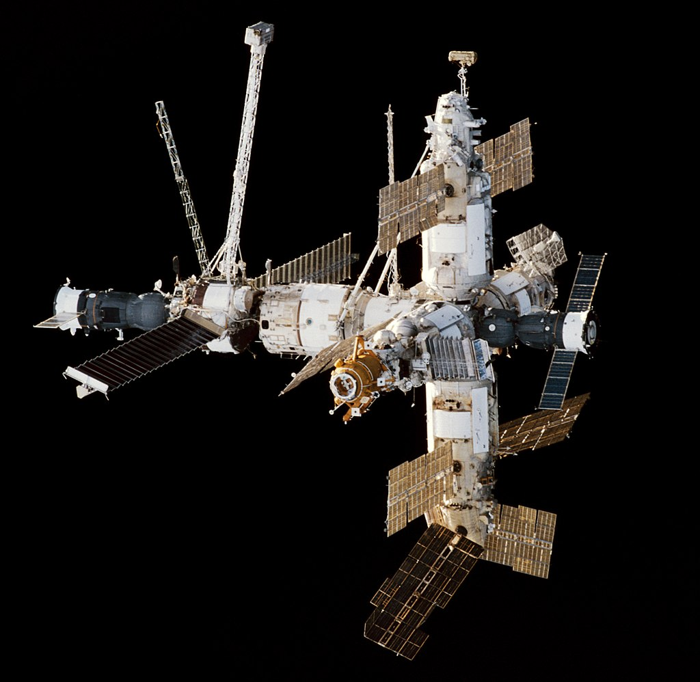

February 20, 1986 - Russia launches the base module of the Mir orbital station into orbit. Mir was the first continuously inhabited long-term research station in orbit and held the record for the longest continuous human presence in space at 3,644 days, until it was surpassed by the ISS on 23 October 2010.
- Launch - 20 February 1986 – 23 April 1996;
- Reentry - 23 March 2001 05:59 UTC;
- Length - 19 m (62.3 ft);
- Width - 31 m (101.7 ft);
- Height - 27.5 m (90.2 ft);
